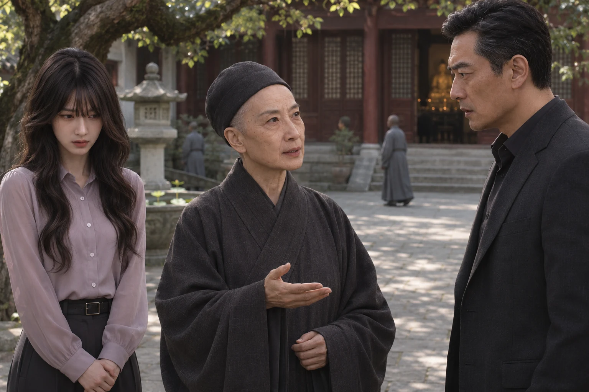
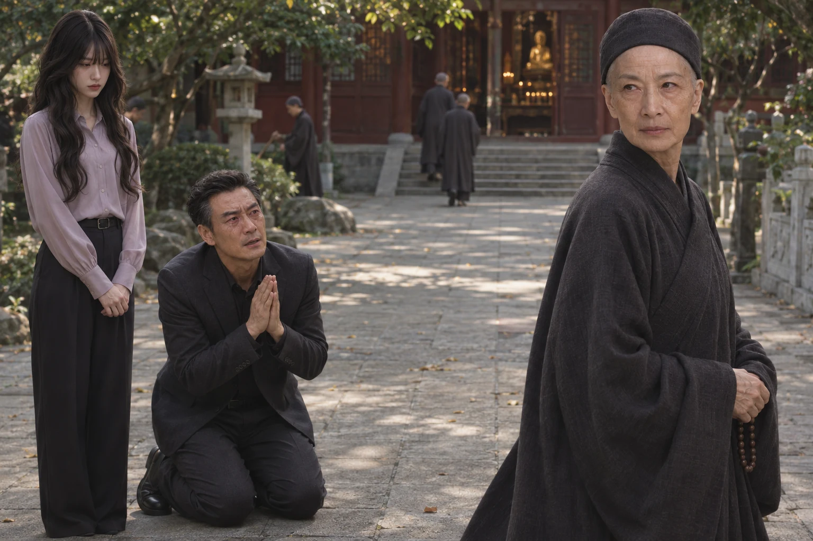
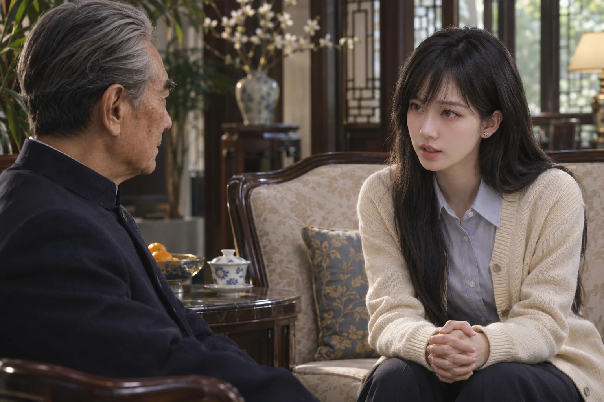
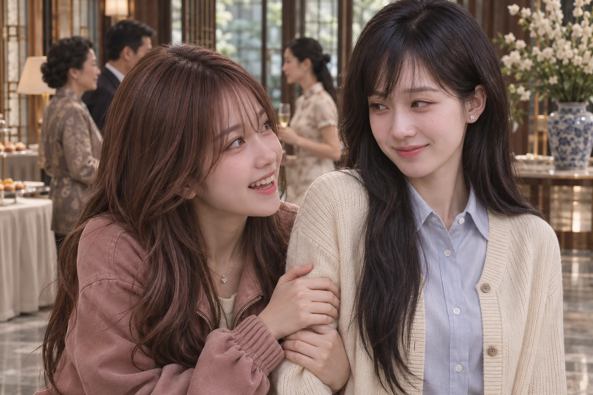
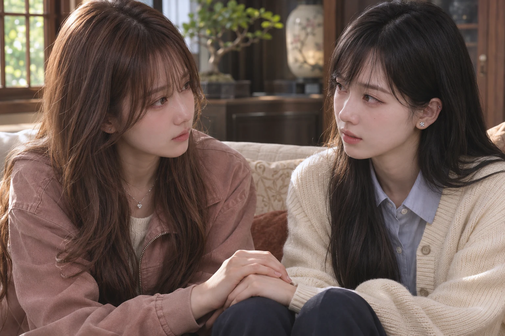

ตอนที่ 16
เพื่อนสนิท?
“เล่าเรื่องที่เกิดขึ้นทั้งหมดมา” สีหน้าและน้ำเสียงของจ้าวอิ๋นยังคงสงบนิ่ง สมกับที่เข้าสู่ทางธรรมมาหลายปี พูดแล้วก็เดินนำสองคนด้านหลังไปนั่งใต้ต้นไม้ใหญ่
ซ่งเหวินกลืนน้ำลายลงคออึกใหญ่ เล่าความผิดทั้งหมดให้มารดาฟังอย่างไม่บิดพลิ้ว หากเทียบกันแล้ว เขาเกรงกลัวมารดามากกว่า แม้ว่าท่านจะใจดี ไม่ค่อยดุลูก ๆ แต่เมื่อก่อนแม่เป็นผู้ตัดสินใจเรื่องเล็กใหญ่ในบ้าน เมื่อถึงเวลาต้องแข็งกร้าว ท่านก็ใจแข็งเสียยิ่งกว่าหิน
ซึ่งพ่อของเขาไม่เคยขัดใจแม่ เขาจึงคิดว่าหากมาขอความเมตตาในวันนี้ ท่านอาจช่วยพูดกับพ่อได้บ้าง แม้สิ่งที่เขาทำมันผิดมหันต์ แต่ท่านปฏิบัติธรรมมานาน ความเมตตาคงมีอยู่ไม่น้อย
“ตลอดเวลาที่แต่งงานกับอาจิ่ว ก็ยังไปมาหาสู่กับฮวาผิงอยู่ตลอด พอฮวาผิงตาย เลยพาซ่งหว่านมาเปิดตัวในงานวันเกิดของอวิ๋นเอ๋อร์ ตอนนั้นในสมองคิดอะไรอยู่”
“ตอนนั้นผมเสียใจมากเกินไปครับแม่ คิดอะไรไม่รอบคอบ รู้สึกแค่ว่าเสี่ยวหว่านไม่เหลือใครแล้ว ผมไม่อยากให้ลูกอยู่ในความลับต่อไป ถือเอางานวันเกิดของอาอวิ๋นประกาศออกไปให้ทุกคนรู้ว่าอาหว่านมีตัวตนอยู่บนโลกใบนี้ อาผิงจะได้ตายตาหลับ เป็นผมที่ใจร้อนเกินไปเองครับ”
เขาปิดเปลือกตาแน่น ตอนนั้นเขาคิดเช่นนี้จริง ๆ อาหว่านน่าสงสาร ความผิดที่เขาก่อไว้ไม่ควรตกสู่ลูก ดังนั้นเขาหวังว่าแม่จะเมตตาหลานสักครั้ง อาหว่านเป็นเด็กดี เรียนเก่ง ต้องนำความภาคภูมิใจมาสู่ตระกูลซ่งได้แน่
“ตอนนั้นแกคงน้อยใจ” จู่ ๆ แม่ชีจ้าวก็เปลี่ยนเรื่องไปเสียดื้อ ๆ ดวงตาราบเรียบทอดมองออกไปไกล ไร้จุดโฟกัส
“แม่พูดถึงอะไรครับ” ซ่งเหวินตามไม่ทัน
“แกได้ยินตอนแม่แนะนำให้พ่อของแกเลือกอาเซวียนขึ้นเป็นประธานซ่งกรุ๊ป นั่นเป็นเพราะแกมีนิสัยมุทะลุ ไม่รอบคอบ และบางครั้งก็เอาความคิดและความสุขส่วนตัวเป็นที่ตั้ง นิสัยเหล่านี้ พ่อของแกที่ทำงานเอาเป็นเอาตายอยู่ข้างนอกไม่รู้ แต่แม่คลอดแกออกมา เลี้ยงมาตั้งแต่แบเบาะจะไม่รู้ได้ยังไง”
“!!” ซ่งเหวินเบิกตากว้าง เขาได้ยินจริง ๆ และมันก่อให้เกิดปมในใจลบไม่ออก ในฐานะลูกชายคนโต แม่ควรคาดหวังและผลักดันเขา แต่เพราะท่านลำเอียง รักน้องเล็กมากกว่า จึงมองไม่เห็นความสามารถของเขา
“ตอนนั้นพ่อแกไม่เห็นด้วย เขาบอกว่าแกมีความสามารถ แถมยังเป็นลูกคนโต ควรให้แกได้พิสูจน์ฝีมือ และไม่อยากให้พี่น้องบาดหมางกันเพราะเรื่องทรัพย์สินและผลประโยชน์ อันที่จริงในฐานะลูกคนโต เขารักแกมากกว่าใคร”

“…” ซ่งหว่านขยับตัวอย่างอึดอัด เธออธิบายไม่ได้เลยว่าทำไมถึงต้องหวั่นกลัวและหายใจไม่เต็มปอดยามอยู่เบื้องหน้าหญิงชราผู้นี้ คล้ายเจอของแสลงที่ต้องหลีกเลี่ยงอย่างไรอย่างนั้น
ชาติก่อนยายแก่ไม่ได้บวชสักหน่อย ทำไมชาตินี้ถึงหันหน้าเข้าสู่ทางธรรมกันเล่า
“เรื่องพวกนี้พูดไปก็ไม่มีประโยชน์แล้วครับแม่ น้องสามได้ทุกอย่างไปหมดแล้ว ตัวผมเองต่อให้ไม่ได้อยู่ในตระกูลซ่งก็ยังเดินต่อไปได้ ห่วงแค่เสี่ยวหว่านคนเดียวเท่านั้น” เขามีความมั่นใจเพราะตนเองยังมีธุรกิจส่วนตัว มีเงินถุงเงินถัง
ซ่งหว่านปวดแปลบในใจ ความเกลียดชังพุ่งทะลุปรอท หากเขาคิดได้เช่นนี้ตั้งแต่ชาติก่อน เธอคงไม่ต้องกลายเป็นโรคซึมเศร้า แต่เขาเห็นแก่ตัว สิ่งนั้นก็จะเอา สิ่งนี้ก็อยากได้
ส่วนหนึ่งที่เขากล้าพาเธอเข้าบ้านซ่ง เพราะเธอเปลี่ยนวิธีการ ทำให้ตัวเองดูน่าสงสารต่างหาก
“ฉันละทางโลกมานานแล้ว ที่ฉันทำได้คือรับฟังและตักเตือน ส่วนเด็กคนนี้..” แม่ชีจ้าวนิ่งอยู่นาน ทำเอาคนถูกจ้องกระสับกระส่าย จิตใจไม่อยู่กับเนื้อกับตัว
สุดท้ายแล้วหญิงชราเลือกจะไม่กล่าวสิ่งใด ลุกขึ้นยืนเตรียมเดินกลับเข้าหอธรรม แต่เสียงอ้อนวอนด้านหลังทำเธอชะงักฝีเท้า
“แม่ครับ เมตตาด้วย” ซ่งเหวินลงทุนคุกเข่าอ้อนวอนมารดา ดวงตาแดงก่ำอย่างอัดอั้น รู้สึกว่าพ่อแม่ใจร้ายกับลูกสาวคนโตของเขาเกินไป
จ้าวอิ๋นเอี้ยวกายกลับไป ดวงตาไร้ระลอกคลื่นอารมณ์ดังเดิม “ฉันเมตตาลูกหลานตระกูลซ่งเสมอ”

“แม่หมายความว่ายังไง” ซ่งเหวินหน้าแดงก่ำ ที่ไม่เมตตาซ่งหว่านเป็นเพราะลูกสาวของเขาไม่มีสายเลือดตระกูลซ่งงั้นหรือ ทำไมพ่อกับแม่ถึงสงสัยในเรื่องนี้ ทั้งที่เขามีผลดีเอ็นเอยืนยัน
ซ่งหว่านกัดริมฝีปากตนเองจนมันเริ่มห้อเลือด การสงสัยว่าเธอไม่ใช่สายเลือดตระกูลซ่ง ก็เหมือนกำลังบอกว่าแม่ของเธอสำส่อน ในฐานะคนเป็นลูกจะไม่อับอายได้อย่างไร
“หมดเวลาแล้ว” แม่ชีชรากล่าวจบก็เดินตรงไปยังหอธรรมโดยไม่เหลียวหลัง นึกสะท้อนใจกับสิ่งที่ลูกหลานตระกูลซ่งต้องเจอในภายภาคหน้า
โดยเฉพาะหลานสาวคนเดียวของเธอ ตอนนี้มีโอกาสต่อสู้ชนะห้าในสิบส่วน ทุกอย่างเพิ่งเริ่มต้น เธอไม่สามารถเตือนในสิ่งที่เธอรู้ ได้แต่พูดอ้อม ๆ เพราะอนาคตเปลี่ยนแปลงได้เสมอ
ในทางกลับกัน ถ้าเธอก้าวออกจากอารามแห่งนี้ และยื่นมือยุ่มย่ามเกินควร นาฬิกาชีวิตของเธอจะนับถอยหลังเหลือแค่สามวันทันที เพราะเธอเคยแลกเปลี่ยนไปแล้วหนึ่งครั้ง ค่าตอบแทนคือชีวิตของเธอเอง
สำหรับเธอแล้วสิ่งนี้คุ้มค่า ให้ตระกูลซ่งได้มีโอกาสสู้ ดีกว่าถูกเรื่องเลวร้ายถาโถมจนไม่มีโอกาสตั้งรับ
…
หลังจากผลสอบประกาศออกมาแล้ว ปรากฏว่าซ่งอวิ๋นได้อันดับหนึ่งด้วยคะแนน 730 ซ่งหว่านรั้งอันดับสอง 729 คะแนน ญาติสนิทมิตรสหายต่างส่งของขวัญ บ้างก็โทรหาผู้เฒ่าซ่งเพื่อแสดงความยินดี โดยเลี่ยงไม่กล่าวถึงซ่งหว่าน แม้พวกเขาจะรู้สึกว่าหลานนอกสมรสจะเก่งแค่ไหนก็ตาม
“อวิ๋นเอ๋อร์ อาจารย์จากมหาวิทยาลัยเป่ยจิงและอาจารย์จากชิงหวาติดต่อมา หลานอยากฟังข้อเสนอจากพวกเขาดูไหม” ผู้เฒ่าซ่งถามหลานสาวหลังเธอเดินออกจากแกลเลอรีส่วนตัว
“หนูจะเข้าชิงหวาค่ะ ไม่ต้องการข้อเสนอพิเศษอะไรด้วย” ซ่งอวิ๋นหนักแน่นในเป้าหมายของตนเอง
แม้จะรู้ว่าพี่สาวนอกสมรสจะเรียนที่เดียวกัน แต่เธอเลือกจะไม่หลีกหนี ในเมื่อมันคือชะตาที่เธอต้องเผชิญ เธอก็ต้องยืนหยัดไม่หลบเลี่ยง อีกอย่างเธอมีความฝันที่อยากเรียนมหาวิทยาลัยชิงหวามาตั้งแต่เด็ก ๆ เธอไม่ควรเอาเรื่องเหล่านั้นมาบดบังความฝันและความต้องการสูงสุดของตัวเอง
“แม้แต่ข้อเสนอก็ไม่ต้องการเหรอ หลานอาจจะได้สิทธิพิเศษในฐานะอันดับหนึ่งเกาเข่านะ”
“หนูไม่อยากได้ค่ะ” ซ่งอวิ๋นยืนยันหนักแน่น เธออยากสัมผัสประสบการณ์เหมือนเด็กปีหนึ่งทั่วไป ทั้งการถูกฝึกทหาร การปรับตัวกับเพื่อนร่วมหอ และการใช้ชีวิตในมหาลัยในช่วงปีแรก เนื่องจากนักเรียนปีหนึ่งต้องอยู่หอใน เธอไม่อยากพลาดประสบการณ์เหล่านี้

“ตกลง ปู่จะบอกอาจารย์ของชิงหวาตามนี้” ซ่งเต๋อเคารพการตัดสินใจของหลานสาว
“เสี่ยวอวิ๋น เพื่อนมาหาลูก” โจวจิ่วเดินนำหญิงสาวคนหนึ่งเข้ามาในห้องโถง ใบหน้าแต่งแต้มรอยยิ้มอ่อนโยนอยู่ตลอดเวลา
ซ่งอวิ๋นชะงักไปเล็กน้อย สายตาที่มองเพื่อนวัยเด็กแตกต่างไปจากเดิม เพียงไม่นานเธอก็ยิ้มแล้วลุกขึ้นยืน “อันฉี”
‘เฉียวอันฉี’ เพื่อนสนิทเพียงคนเดียวของซ่งอวิ๋น มีดวงตากลมโตสีน้ำตาลเข้ม เส้นผมหนาและหยักศกเล็กน้อย ริมฝีปากสีชมพูอ่อนมักพูดในสิ่งที่คู่สนทนาอยากได้ยินเสมอ
“สวัสดีค่ะคุณปู่ซ่ง วันนี้หนูมารบกวนอีกแล้ว” น้ำเสียงหวานเอ่ยอย่างร่าเริง
ผู้เฒ่าซ่งโบกมือเบา ๆ พลางส่ายศีรษะ “ไม่รบกวน ๆ เสี่ยวอวิ๋นปู่ไปทำงานก่อน มีอะไรก็ไปหาปู่ในห้องทำงานนะ”
“ค่ะคุณปู่” ซ่งอวิ๋นยิ้มรับ อายุปูนนี้แล้ว ปู่ของเธอก็ยังทำงาน แม้จะไม่ได้เข้าบริษัทบ่อย ๆ แล้วก็ตาม
“แม่ไปเตรียมขนมก่อนดีกว่า” โจวจิ่วแยกตัวออกไปเช่นเดียวกัน
“เสี่ยวอวิ๋น ยินดีด้วยนะ เธอได้อันดับหนึ่งในการสอบครั้งนี้” เฉียวอันฉีกระโดดโลดเต้นเข้าไปกอดแขนเพื่อนสนิท “พวกเราจะได้เรียนมหาลัยด้วยกันจริง ๆ ด้วย”

“ขอบใจนะอันฉี เธอเองก็เก่งเหมือนกัน สอบได้ตั้ง 714 คะแนน คุณลุงกับคุณป้าคงปิดหมู่บ้านฉลองแล้วมั้ง” หญิงสาวเออออไปตามเรื่องตามราว ทั้งที่ไม่อาจสนิทใจได้ดังเดิม
อาจเพราะเธอเห็นว่าในฝัน เพื่อนสนิทเพียงคนเดียวของเธอคนนี้ไม่ได้ช่วยเหลือยามเธอตกที่นั่งลำบาก ต่อให้ช่วยเหลือก็กลับทำให้เรื่องราวแย่ลง ยิ่งกว่านั้นยามเธอขอความช่วยเหลือตอนที่ชีวิตตกต่ำที่สุด อีกฝ่ายเลือกจะเมินหน้าหนี ทำเหมือนไม่รู้จักกัน
ไม่น่าเชื่อว่าคนที่สนิทกันมาเกือบทั้งชีวิตจะเมินเฉย แม้ความช่วยเหลือน้อยนิดก็ไม่มี ที่แย่ที่สุดคือคำพูดดูถูก
“จริงสิ เรื่องนั้น.. ฉันเสียใจด้วยนะ เธอไม่เป็นไรจริง ๆ ใช่ไหม ตอนคุยผ่านโทรศัพท์ฉันยังไม่สบายใจ” เฉียวอันฉีกุมมือซ่งอวิ๋นพลางบีบมันเบา ๆ
“ไม่เป็นไรแล้วละ มันคือเรื่องของผู้ใหญ่ ฉันพูดอะไรมากไม่ได้” ซ่งอวิ๋นมองมืออีกฝ่าย ก่อนจ้องเข้าไปในดวงตากลมโต พยายามมองหาความจริงใจ ซึ่งภายในนั้นเต็มไปด้วยความเห็นอกเห็นใจ
ไม่แปลกเลยที่เธอมองไม่ออกเฉียวอันฉีแนบเนียนเหลือเกิน มิตรภาพสิบกว่าปีเปลี่ยนไปตอนไหน หรือบางทีเธออาจมองอันฉีเป็นเพื่อนสนิทฝ่ายเดียว

“แล้วผู้หญิงคนนั้นมาก่อกวนเธอหรือเปล่า ฉันว่าเธอต้องระวังตัวไว้บ้างนะอาอวิ๋น ลูกนอกสมรสส่วนมากขี้อิจฉา ถ้าต้องปะทะกันจริง ๆ อย่าถอยง่าย ๆ เด็ดขาด ให้หล่อนรู้ว่าสถานะของตัวเองคืออะไร ไม่อย่างนั้นยัยนั่นคงได้ใจ”
“ปะทะอะไรกัน เธอก็รู้ว่าฉันไม่สู้คน อีกอย่างซ่งหว่านไม่เคยเข้ามาหาเรื่องฉันหรอก เธอสบายใจได้” คำพูดยุยงนี้อาจใช้ได้ผล หากเธอไม่ได้เห็นเรื่องราวในความฝัน
“น้อยไปสิ เธอน่ะเอาคืนคนได้เจ็บแสบที่สุดเท่าที่ฉันเคยเห็นเลย” เฉียวอันฉีหัวเราะ
ใช่ ตราบใดที่ไม่ปล่อยให้อารมณ์อยู่เหนือเหตุผล เธอเอาคืนเก่งมาก และทำโดยที่ไม่มีใครรู้ว่าเป็นฝีมือเธอด้วย บางทีถ้าอันฉีล้ำเส้น เธอก็อาจกำจัดงูพิษออกไปเร็วกว่าที่เคยคิดไว้